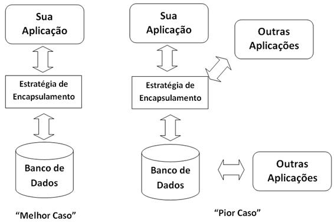
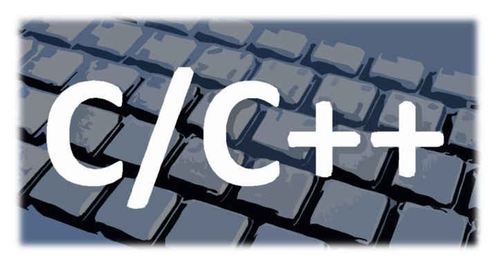
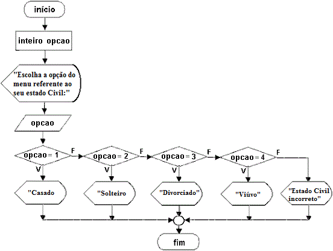
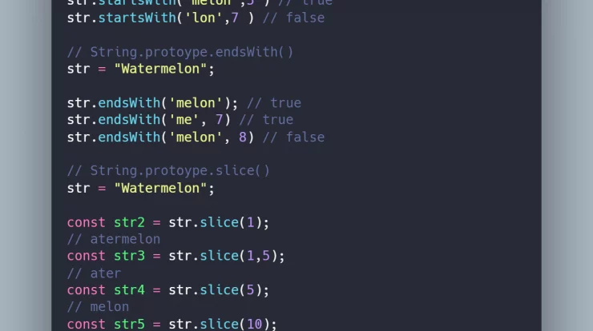
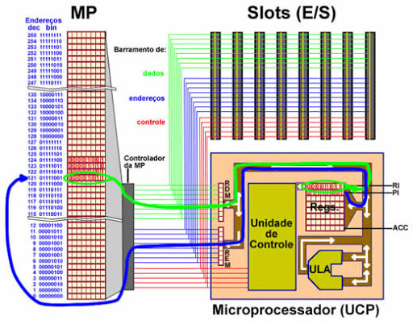

Exercício de Revisão: Conceitos Básicos de SQL, Java, C e C++
Instruções: Responda às seguintes perguntas para revisar e solidificar seus conhecimentos em conceitos básicos de SQL, Java, C e C++.
1- SQL (Structured Query Language):
O que é SQL e qual é o seu propósito no contexto de bancos de dados?
SQL (Structured Query Language) é uma linguagem de programação usada para gerenciar e manipular dados em bancos de dados relacionais. Ele permite realizar operações como consultas, inserções, atualizações e exclusões, fornecendo uma maneira padronizada e eficiente de interagir com dados armazenados em sistemas de gerenciamento de banco de dados relacionais.
Forneça um exemplo de uma consulta SQL simples.
Consulta SQL para extrair dados de uma tabela. Suponhamos que temos uma tabela chamada "Clientes" com as colunas "ID", "Nome" e "Email" consulta SQL para extrair dados de uma tabela.Essa consulta utiliza a cláusula SELECT para indicar que queremos extrair dados, o asterisco (*) indica que queremos todas as colunas, e FROM Clientes especifica a tabela da qual queremos extrair os dados.
2- Banco de Dados Relacional:
Explique o conceito de um banco de dados relacional.
Um banco de dados relacional organiza dados em tabelas bidimensionais, onde cada tabela tem linhas (registros) e colunas (atributos).Cada tabela possui uma chave primária única para identificar registros, e relações entre tabelas são estabelecidas usando chaves primárias e estrangeiras.
Cite pelo menos três tipos de dados que podem ser armazenados em um banco dedados relacional.
Dados Numéricos:Esses tipos de dados são usados para armazenar valores numéricos, como quantidades, preços e índices.
Dados de Texto:Eles são comumente utilizados para representar nomes, descrições e outras informações de texto.
Dados de Data e Hora:Esses tipos de dados são úteis para armazenar datas de nascimento, datas de transações e outros eventos relacionados ao tempo.

3- Java:
Descreva brevemente a linguagem de programação Java.
Java é uma linguagem de programação orientada a objetos e independente de plataforma. Desenvolvida pela Sun Microsystems, ela utiliza o conceito de bytecode executado pela Máquina Virtual Java (JVM). Sua independência de plataforma permite que os programas escritos em Java sejam executados em diferentes sistemas operacionais.
Mencione pelo menos três características-chave de Java.
Rica Biblioteca Padrão (API):Java oferece uma extensa biblioteca padrão (API - Application Programming Interface) que abrange uma ampla gama de funcionalidades.
Segurança:Java possui recursos integrados de segurança, incluindo a execução de programas Java em um ambiente de sandbox, restringindo o acesso não autorizado a recursos do sistema.
Portabilidade:O código Java é compilado em bytecode, que pode ser executado em qualquer Máquina Virtual Java (JVM).
4- C e C++:
Quais são as principais diferenças entre as linguagens de programação C e C++?
C e C++ são linguagens de programação relacionadas, mas com abordagens distintas. Enquanto C é uma linguagem procedural focada em funções, C++ é uma extensão que introduz programação orientada a objetos, permitindo o uso de classes, herança e polimorfismo. C++ também simplifica a manipulação de strings com a classe string e oferece recursos avançados de gerenciamento de memória, como alocação dinâmica.
Dê exemplos de situações em que cada uma dessas linguagens seria mais apropriada.
Programação de Sistemas Embarcados: C é frequentemente usado na programação de sistemas embarcados devido ao seu baixo nível de abstração e controle direto sobre hardware.Desenvolvimento de Sistemas Operacionais: Por sua eficiência e controle de baixo nível, C é uma escolha comum para desenvolver sistemas operacionais.
Desenvolvimento de Jogos: C++ é amplamente utilizado na indústria de jogos devido à sua capacidade de modelar objetos e comportamentos complexos, proporcionando eficiência e flexibilidade.Desenvolvimento de Bibliotecas e Frameworks: A capacidade de criar bibliotecas reutilizáveis e frameworks torna C++ uma escolha adequada para desenvolvimento de software extensível e modular.
5- Variáveis em C e C++:
Como você declara uma variável em C?
Em C, você declara uma variável especificando o tipo de dado seguido pelo nome da variável.
E em C++?
Em C++, a programação orientada a objetos permite a criação de tipos de dados personalizados (classes), e você pode declarar variáveis desses tipos personalizados.

6- Estruturas de Controle de Fluxo:
Mencione três estruturas de controle de fluxo utilizadas em Java
Estrutura de Controle Condicional (if-else):Permite a execução condicional de blocos de código com base em uma condição booleana.
Estrutura de Repetição (for):Utilizada para iterar sobre uma sequência de valores ou realizar uma ação um número específico de vezes.
Estrutura de Repetição (while):Semelhante ao for, mas a condição de continuação é avaliada antes de cada iteração.A execução do bloco de código ocorre enquanto a condição é verdadeira.
E em C e C++?
Tem as mesmas estruturas de Controlo de Fluxo.

7- Manipulação de Strings:
Explique como você manipularia strings em Java.
Em Java, a manipulação de strings é feita principalmente com a classe String. Para criar, você pode usar as aspas duplas ou concatenar strings. A comparação é realizada com equals e compareTo. Substrings podem ser obtidas com substring,e transformações de capitalização são feitas com toUpperCase e toLowerCase.
E em C e C++?
Criação de Strings:Utiliza arrays de caracteres.

8- Operadores Relacionais e Lógicos:
Liste pelo menos três operadores relacionais em C++
Igual a (==):Verifica se dois valores são iguais.
Diferente de (!=):Verifica se dois valores são diferentes.
Maior que (>):Verifica se o valor à esquerda é maior que o valor à direita.
Como os operadores lógicos são utilizados em Java?
Em Java, os operadores lógicos são utilizados para realizar operações booleanas em expressões condicionais.Os principais operadores lógicos são (AND) (OR) e (NOT).
9- Alocamento de Memória:
Como a alocação de memória é tratada em C e C++?
Em C, a alocação de memória é tratada manualmente por meio das funções malloc, calloc, realloc, e free. O programador é responsável por gerenciar a memória alocada e liberá-la quando não for mais necessária.
Em C++, são utilizados os operadores new e delete para alocação e liberação de memória.
Existe alguma diferença significativa entre os dois?
Em C, utiliza-se malloc, calloc, realloc e free, com gerenciamento manual. Já em C++, os operadores new e delete proporcionam uma abordagem mais orientada a objetos,com recursos como smart pointers para facilitar o gerenciamento automático e seguro de memória.

10- Comandos SQL para CRUD:
Liste os comandos SQL básicos para realizar operações CRUD (Create, Read, Update, Delete) em um banco de dados.
CREATE (Criar):Criação de tabelas.
SELECT (Ler):Permite ler e recuperar dados específicos de uma tabela no banco de dados.
UPDATE (Atualizar):Modificação de registros existentes.